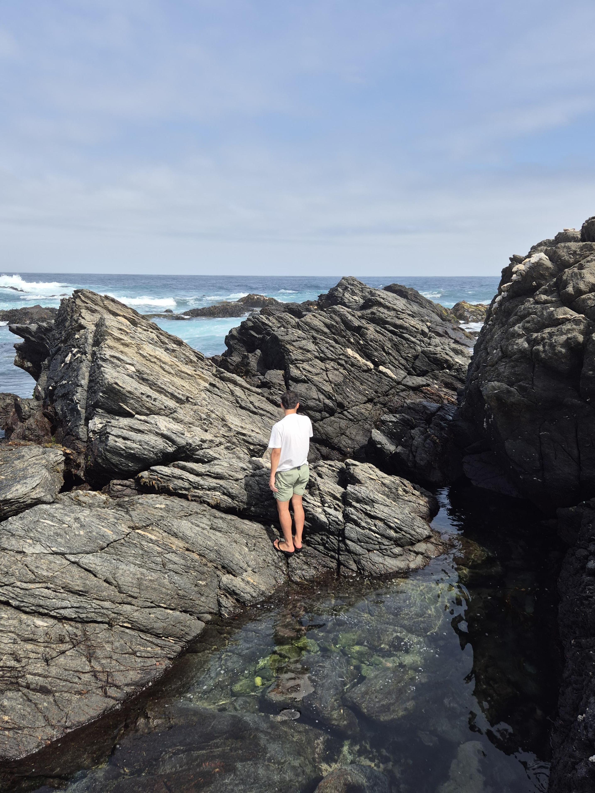
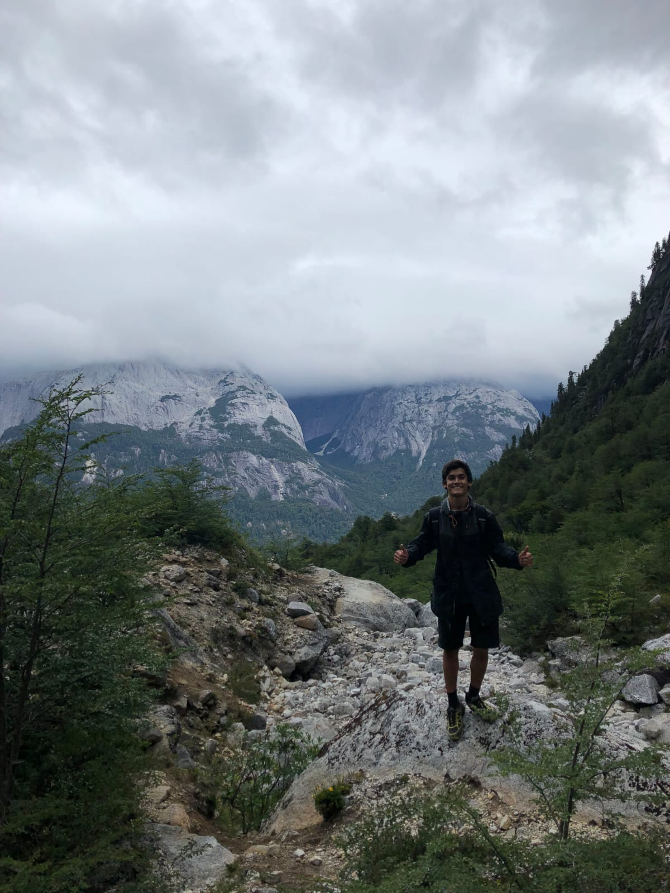

Hola! Soy estudiante de ingeniería civil en Ciencias de la Computación, ingresado el año 2023. Soy apasionado del fútbol, ya sea para verlo como para jugarlo; fanático del FC Barcelona. Vivo en las afueras de Lo Barnechea, en El Arrayán, hacia la montaña, donde tengo dos perros y una gata. Me encantaría viajar todo lo posible y aprecio la buena comida.


| Habilidades | Nivel |
|---|---|
| Python | Básico |
| JS/HTML/CSS | Básico |
| SQL | Básico |
| Inglés | Avanzado |
| Portugués | Intermedio |
| Excel | Básico |
Dentro de mi fanatismo por el fútbol, hay un jugador que tiene un lugar especial en mi corazón: Matías Fernández. Un crack, un distinto. Aunque castigado por las lesiones, supo dejar huella en Europa, comenzando a temprana edad. Sin embargo, donde tuvo mayor impacto e hizo conocer su nombre fue en el cacique. El 14 de los blancos encantó no solo a los chilenos, sino al continente, siendo el mejor de América el año 2006.
Grandes despliegues, tiros libres, su buen pase o impresionante potencia, son una pequeña muestra de su arsenal de cualidades, pero si hay algo por lo que recuerdo a Matías es por su gambeta, especialmente por el amague de rabona. Lo creó y lo llevó a la perfección. Con su marca registrada dejó en el piso a cuantó jugador se atrevió a marcarlo; en Colo Colo, Villarreal, Sporting de Portugal, o la selección chilena, entre otros, no hubo defensor que puediese parar semejante magia.
Si quieres entender de qué hablo, apriete este link y deléitese.
Puedes ver mi GitHub aquí: mi perfil de GitHub